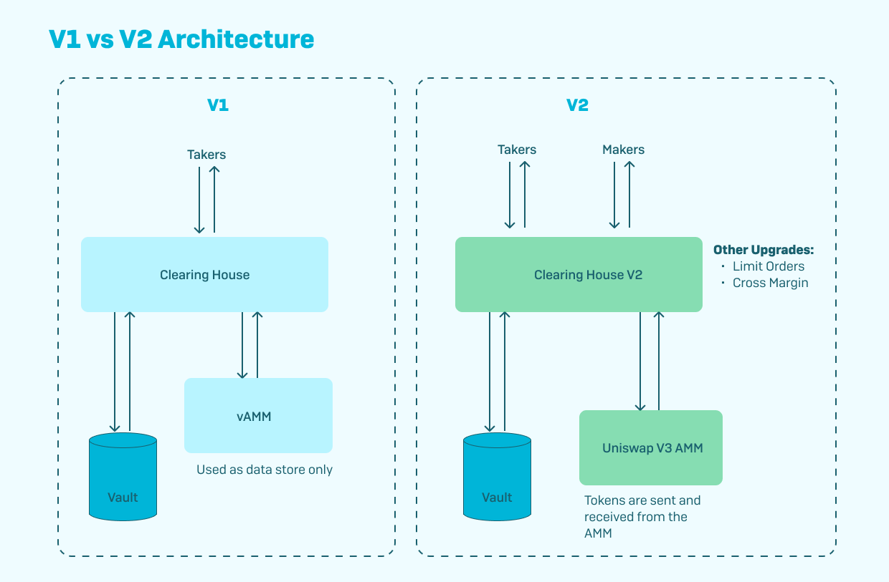
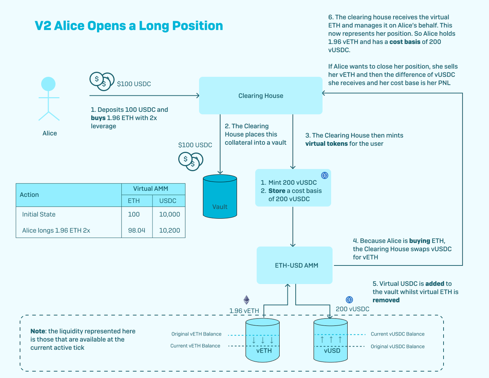
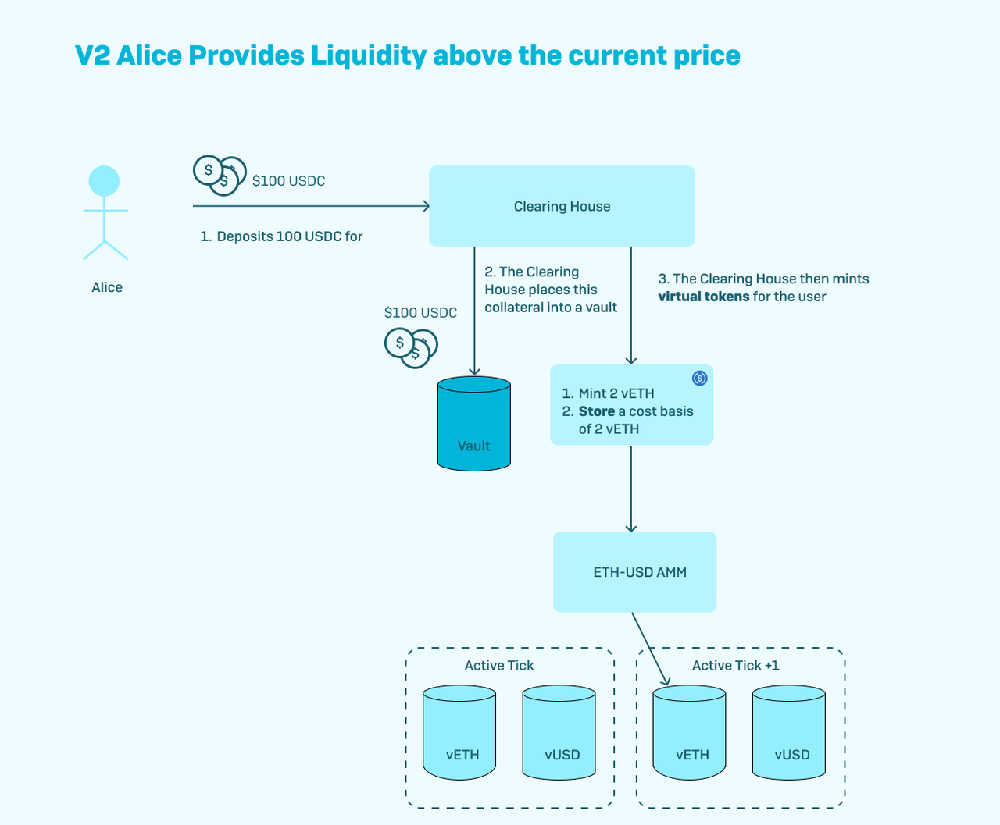
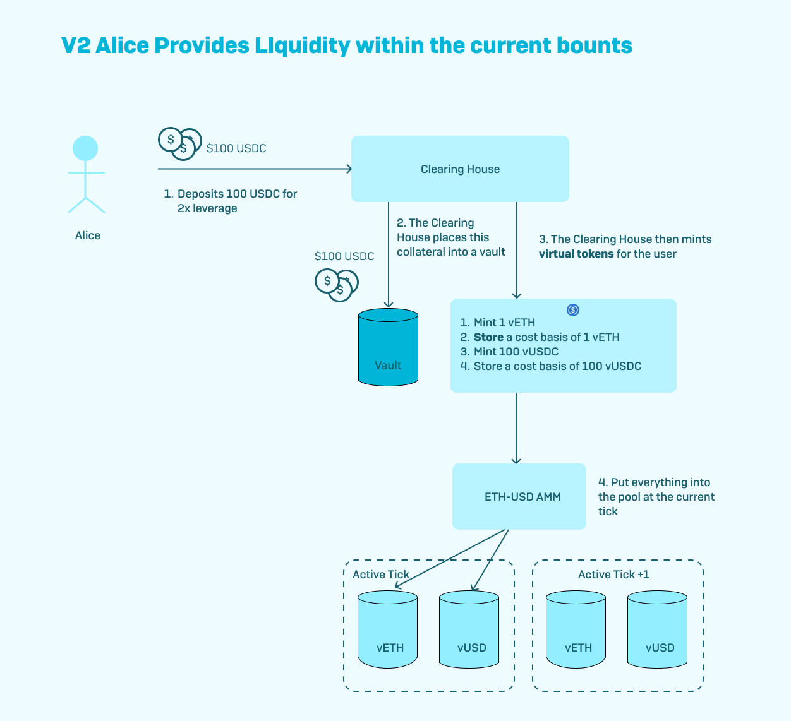

Perpetual Protocol V2 深度解析
Perpetual Protocol V2 深度解析
引言
Perpetual Protocol 是一个去中心化的永续合约交易平台，与中心化交易所不同，它 不保管用户的资金，用户始终对自己的资产拥有完全的控制权。最重要的是，Perpetual Protocol 允许用户以 无需许可 且 完全透明 的方式进行交易。目前，Perpetual Protocol 使用 USDC 稳定币 作为主要的抵押品，未来将扩展到其他类型的抵押品。
Perpetual Protocol V2 对初始设计进行了迭代，引入了一种新的管理头寸和执行交易的模型，该模型利用了 Uniswap V3 及其 集中的流动性。本文将深入探讨 Perpetual Protocol V2 的核心机制、与 V1 的主要区别，以及常见的三种交易场景。
一、Perpetual Protocol V2 的核心机制
1. 集成 Uniswap V3 的集中流动性
Perpetual Protocol V2 利用了 Uniswap V3 的集中流动性特性，使得资金的利用率大大提高。V1 中使用的虚拟自动做市商（vAMM）逻辑现在在 Uniswap V3 上运行，提供了更高效的交易体验。
2. 杠杆流动性提供者（Leveraged LPs）
在 V2 中，引入了 杠杆流动性提供者（Leveraged LPs） 的概念，允许 LP 在提供一定数量的抵押品（如 USDC）的基础上，获得最高达 10 倍杠杆 的虚拟资产。这使得 LP 可以在系统内放置更多的流动性，提高资金利用率。
示例：
- 初始资金：LP 向清算所（Clearing House）提供 1,000 USDC 作为抵押品。
- 杠杆倍数：使用 10 倍杠杆，LP 获得 10,000 vUSDC 的信用额度。
- 资产分配：LP 可以将这 10,000 vUSDC
分配到不同的资产和价格区间。例如：
- 5,000 vUSDC 保持为 vUSDC。
- 5,000 vUSDC 按照预言机价格兑换为 vETH（假设 ETH 价格为 2,500 USDC，则获得 2 vETH）。
- 添加流动性：LP 可以根据自己的做市策略，将这些 v-token 分配到 Uniswap V3 上的相应价格区间。
二、V2 相较于 V1 的主要变动

1. 流动性来源的变化
- V1： 使用内部的 vAMM，为交易者提供流动性，价格由内部算法决定。
- V2： 利用 Uniswap V3 的真实 AMM，交易者的订单直接在 Uniswap V3 上执行，价格更具市场性。
2. 资金效率的提升
- V1： 流动性提供者无法获得交易手续费，且资金利用率较低。
- V2： 引入杠杆 LP，LP 可以获得交易手续费，并且通过杠杆机制提高资金利用率。
3. 风险管理的改进
- 价格风险： 由于 V2 直接与 Uniswap V3 集成，价格更为准确，减少了价格操纵的可能性。
- 清算机制： V2 引入了更严格的清算机制，保护系统的安全性。
三、交易场景解析
场景一：交易者开立多头头寸

步骤：
- 抵押 USDC：交易者将 USDC 存入 Perpetual Protocol 作为初始保证金。
- 选择杠杆倍数：交易者选择所需的杠杆倍数（例如 5 倍）。
- 开立多头头寸：交易者在 Perpetual Protocol 上开立 ETH 的多头头寸。
- 订单执行：协议在 Uniswap V3 上为交易者执行订单，购买相应数量的 vETH。
- 头寸管理：交易者的头寸由清算所管理，实时监控保证金和杠杆率。
关键点：
- 价格执行：交易价格基于 Uniswap V3 的价格，提高了价格的透明度和准确性。
- 保证金要求：系统会根据杠杆倍数和头寸大小，计算所需的初始保证金。
- 风险控制：如果头寸的未实现损益导致保证金率低于维持保证金要求，可能会触发清算。
场景二：在标记价格之上提供流动性

背景：
- 标记价格（Mark Price）：当前市场上 ETH 的价格，例如 2,500 USDC。
- LP 认为 ETH 的价格将会上涨，想要在价格区间 [2,500 USDC, 3,000 USDC] 提供流动性。
步骤：
- 抵押 USDC：LP 存入 1,000 USDC 作为抵押品。
- 选择杠杆倍数：LP 选择 5 倍杠杆，获得 5,000 vUSDC 的信用额度。
- 资产配置：
- 5,000 vUSDC 全部兑换为 vETH，按照当前价格获得 2 vETH。
- 设置价格区间：LP 将 2 vETH 放置在 [2,500 USDC, 3,000 USDC] 的价格区间内。
- 添加流动性：LP 在 Uniswap V3 上的相应价格区间内提供流动性。
预期结果：
- 价格上涨获利：如果 ETH 价格上涨到 3,000 USDC，LP 可以赚取交易手续费和价差收益。
- 价格下跌风险：如果价格下跌，LP 的头寸价值减少，但由于是在标记价格之上提供流动性，初始时 LP 并未持有 vUSDC，因此风险相对可控。
场景三：围绕标记价格添加流动性

背景：
- LP 想要在 ETH 的当前价格附近提供流动性，以赚取更多的交易手续费。
步骤：
- 抵押 USDC：LP 存入 2,000 USDC 作为抵押品。
- 选择杠杆倍数：LP 选择 10 倍杠杆，获得 20,000 vUSDC 的信用额度。
- 资产配置：
- 10,000 vUSDC 保持为 vUSDC。
- 10,000 vUSDC 按照当前价格兑换为 4 vETH（假设 ETH 价格为 2,500 USDC）。
- 设置价格区间：LP 将 vUSDC 和 vETH 在价格区间 [2,400 USDC, 2,600 USDC] 内提供流动性。
- 添加流动性：LP 在 Uniswap V3 上的该价格区间内提供流动性。
预期结果：
- 高手续费收益：由于交易量通常集中在当前价格附近，LP 可以获得更多的交易手续费。
- 价格波动风险：价格向任一方向剧烈波动，可能导致无常损失，LP 需要密切监控头寸。
四、技术细节
1. 虚拟资产（v-token）
- vUSDC 和 vETH：系统通过抵押品和杠杆倍数，铸造相应的虚拟资产。
- 用途：v-token 用于在 Uniswap V3 上提供流动性，代表 LP 的头寸。
2. 清算所（Clearing House）
- 功能：管理用户的头寸和抵押品，计算风险和保证金要求。
- 风险控制：当用户的保证金率低于维持保证金要求时，清算所可以触发清算，防止系统损失。
3. 预言机价格
- 价格来源：Perpetual Protocol 使用预言机获取资产的标记价格，确保价格的准确性。
- 用途：用于头寸的估值、保证金计算和清算触发。
五、风险与注意事项
1. 杠杆风险
- 高杠杆放大风险：杠杆倍数越高，价格波动对头寸的影响越大，可能导致快速爆仓。
- 谨慎选择杠杆：用户应根据自身风险承受能力，谨慎选择杠杆倍数。
2. 价格波动风险
- 市场风险：加密资产价格波动剧烈，可能导致头寸价值大幅变化。
- 风险管理：建议用户密切关注市场行情，及时调整头寸。
3. 清算风险
- 保证金不足：如果未实现损益导致保证金率低于维持保证金要求，头寸可能被清算。
- 避免清算：用户应保持足够的保证金，或及时追加资金。
4. 系统风险
- 智能合约风险：虽然合约经过审计，但仍可能存在漏洞。
- 预言机风险：价格数据可能受到攻击或异常波动，影响系统正常运行。
六、总结
Perpetual Protocol V2 通过引入 Uniswap V3 的集中流动性和杠杆 LP 机制，大幅提高了资金利用率和交易效率。用户可以在无需许可和完全透明的环境下，进行永续合约交易和流动性提供。然而，高杠杆同时也带来了更高的风险，用户在参与前应充分了解其机制和潜在风险，谨慎决策。
七、参考资料
Perpetual Protocol V2 深度解析
http://navafee.github.io./perpetualv2/